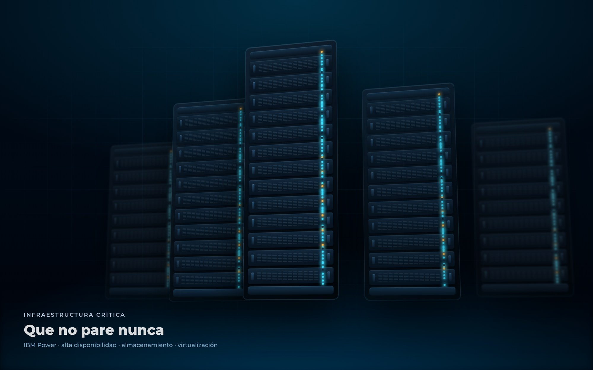
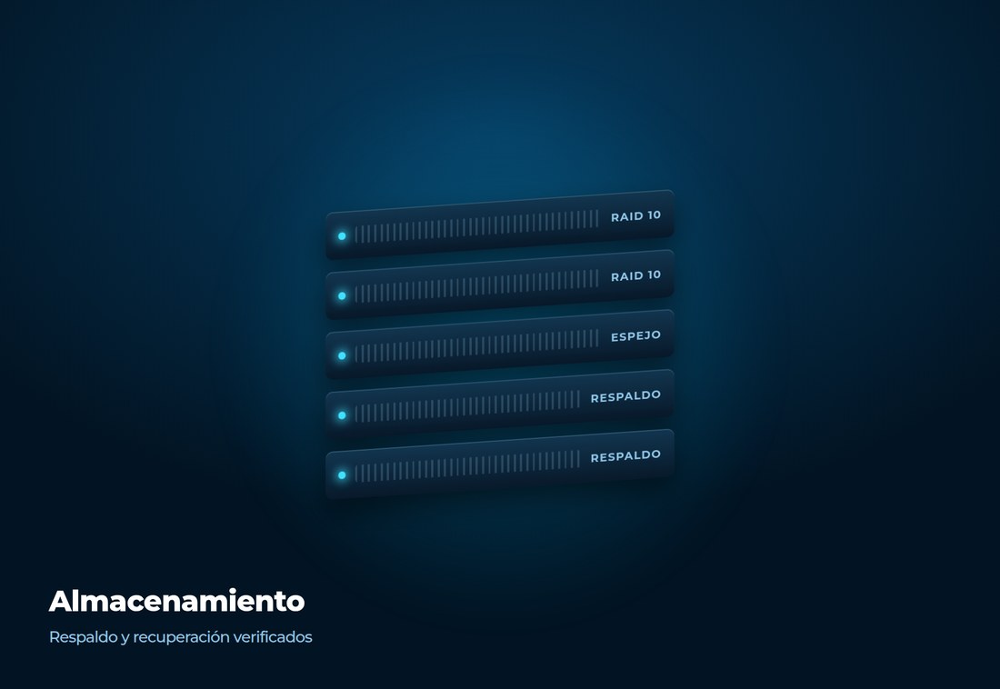
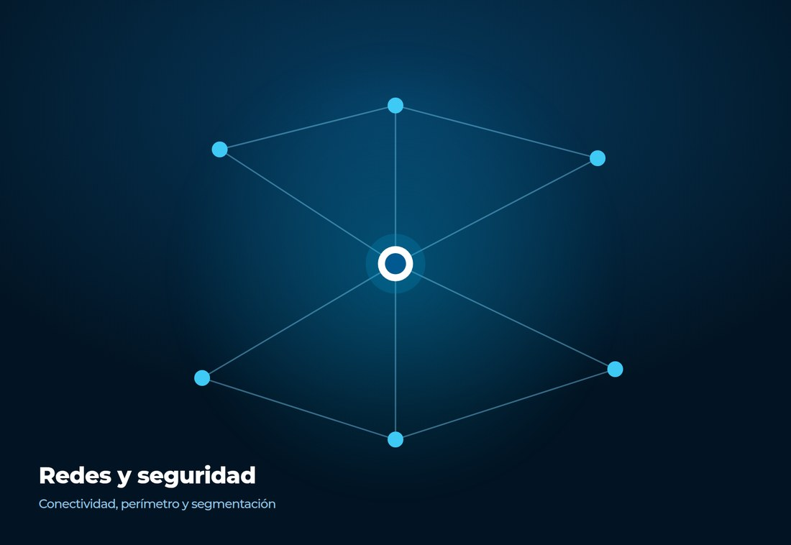
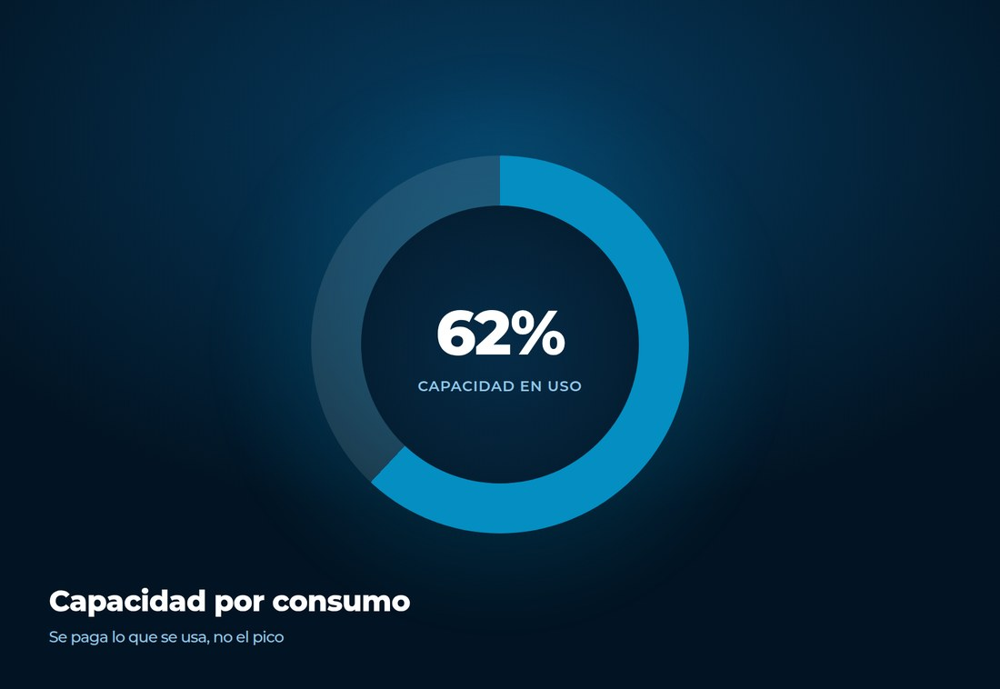
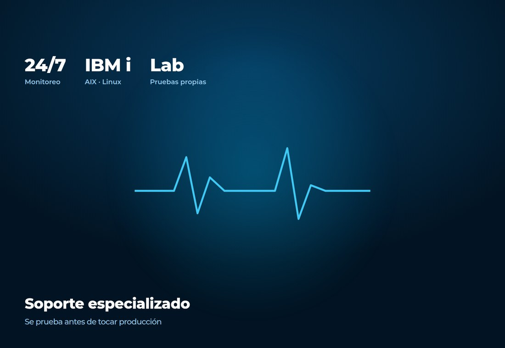

36 años construyendo la infraestructura y el software sobre el que operan bancos,
industrias y empresas del Paraguay. Dos frentes, una misma exigencia: que la operación
siga en pie.
Calidad y seguridad de la información certificadas
Ecosistema
El respaldo de los fabricantes que sostienen la industria.
La plataforma que instalamos no depende de nosotros solos: detrás está el fabricante, con
su soporte y su escalamiento directo. Ese acceso se gana y se revalida, fabricante por
fabricante.
La relación con IBM es la más antigua y la más profunda: SoftShop integra el grupo de
Asociados de Negocios desde sus primeros años y hoy figura en el directorio de IBM como
System Integrator, con cobertura sobre almacenamiento, virtualización y observabilidad.
Es lo que habilita el escalamiento directo al fabricante cuando un sistema en producción
no puede esperar.
Los niveles indicados son los que publica cada fabricante.
Núcleo del negocio
Infraestructura crítica.
Es la parte que nadie ve hasta que falla, y el trabajo consiste en que nunca llegue ese
día. Servidores IBM Power dimensionados sobre la carga real, esquemas de disponibilidad
continua, almacenamiento con respaldo verificado y capacidad que se paga por consumo.


Almacenamiento
Diseño del storage y políticas de respaldo que se prueban restaurando.

Redes y seguridad
Conectividad, perímetro y segmentación de la red corporativa.

Capacidad por consumo
Power Enterprise Pool 2.0: capacidad que se activa cuando la operación la necesita.

Soporte especializado
IBM i, AIX y Linux, con escalamiento directo al fabricante.
Los sistemas con los que se trabaja todos los días.
No revendemos licencias de otros: estos productos los desarrolla y los mantiene nuestro
equipo, y por eso pueden cambiar cuando el negocio del cliente cambia.
SuiteSolu · suite financiera
Una solución por cada tipo de entidad financiera.
SuiteSolu es la suite que SoftShop dedica al sector financiero paraguayo. No es un sistema único que después hay que forzar: es una solución vertical por mercado, desarrollada en el país y alineada a la normativa del Banco Central del Paraguay.
Toda la vida del colaborador, en un solo expediente.
Liquidación de haberes más todos los subsistemas de personal, accesibles en línea para el área de recursos humanos y para el propio colaborador. En producción en empresas paraguayas desde 2013.
01Liquidación de haberes con historial completo en línea
02Legajo, certificados laborales y documentación asociada
03Ausencias, licencias, reposos y vacaciones con trazabilidad
04Capacitación, evaluaciones de desempeño y sanciones
Del dato disperso al número que se mira todos los días.
Integramos las fuentes que la empresa ya tiene —incluidas las planillas que en la práctica sostienen decisiones— y acordamos una definición única por indicador. El gráfico es la parte fácil.
01Integración de sistemas propios y de terceros
02Definición única y documentada por indicador
03Procesos de carga con control de errores
04Visibilidad por rol: dirección, jefatura y operación
Sistemas a medida y modernización sin cortar la operación.
Desarrollos construidos sobre las reglas de negocio reales de la empresa, y migración por etapas de sistemas que funcionan pero envejecieron. Se releva lo vigente, se aísla lo reescribible y se avanza sin apagar nada.
01Sistemas financieros, industriales y de gestión
02Integración con la plataforma que ya está instalada
03Migración por etapas con conciliación contra el período anterior
No son referencias genéricas: son proyectos con nombre, con un problema concreto y con un
resultado que el cliente puede confirmar.
Banco Itaú
Reportes 40 % más rápidos, sin comprar licencias
El proceso de reporte de información mejoró un 40 % sin invertir en licencias adicionales de Oracle, aplicando virtualización y replicación de datos. El banco ganó disponibilidad y tiempo de actividad del servicio.
Visión Banco
Infraestructura para inteligencia artificial
Hardware y software para aprendizaje automático aplicado a campañas de promoción, calificación del cliente, comportamiento de pago y prevención de fraude.
Agencia Financiera de Desarrollo
Planificación y reportes financieros
Presupuesto, previsión y análisis con IBM Planning Analytics sobre tecnología Cognos TM1, con la opción de correr en las instalaciones de la entidad o en la nube.
También confían Banco Central del Paraguay, Itaipú Binacional, ANDE, Tigo, Banco Continental
y el Ministerio de Hacienda.
Ver todos los clientes
Siguiente paso
Contanos qué no puede dejar de funcionar.
Una reunión de diagnóstico, sin compromiso: revisamos su plataforma actual, los puntos de corte y qué haría falta para sostener el crecimiento de los próximos años.